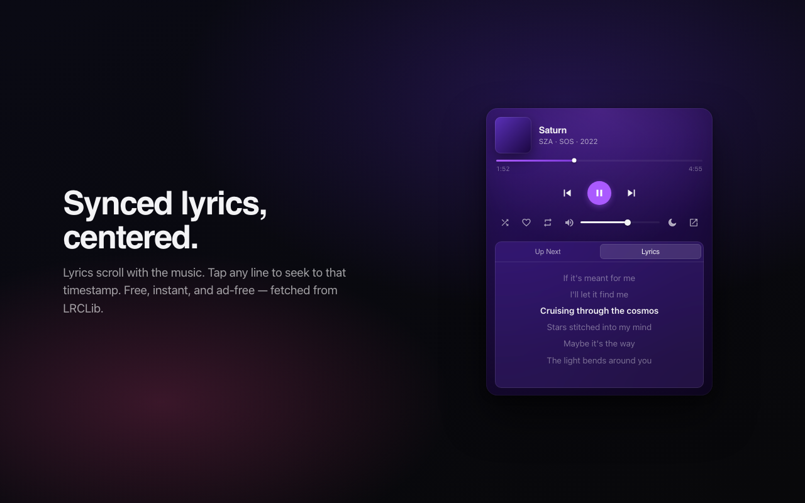
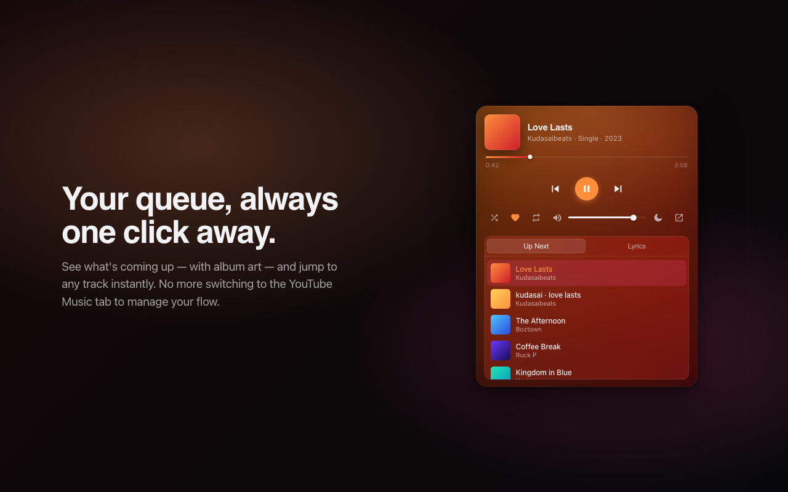
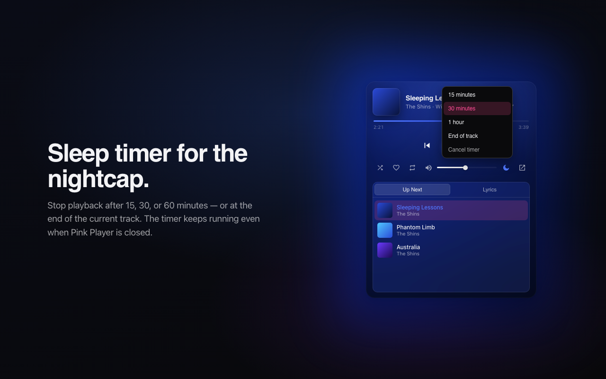
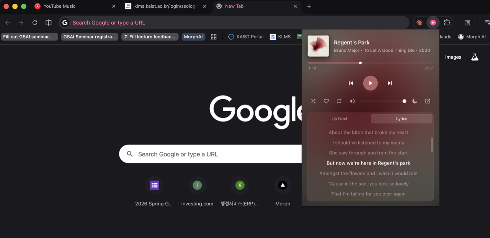
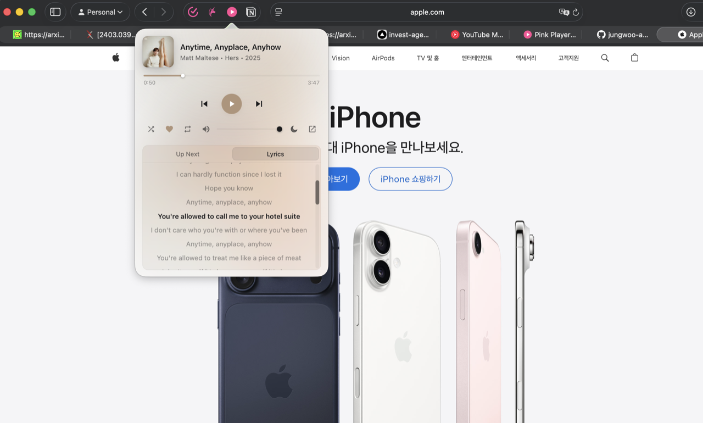

Synced lyrics, centered.
Lyrics scroll with the music. Tap any line to seek. Free, instant, ad-free.
Mini Player for YouTube Music
A beautiful mini player for YouTube Music. Adaptive color from album art, synced lyrics, queue, sleep timer, keyboard shortcuts. No tracking, no ads.
Mac build is experimental — see release notes for install steps. Apple Silicon only.

Lyrics scroll with the music. Tap any line to seek. Free, instant, ad-free.

See what's coming up with album art, and jump to any track instantly.

Stop after 15, 30, or 60 minutes — or at end of track. Keeps running even when the popup is closed.
Same player, native in both Chrome and Safari. Floats over any tab.

Chrome

Safari